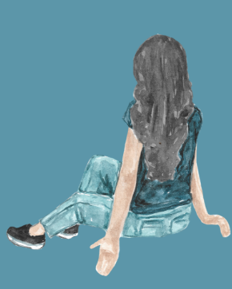
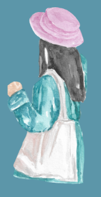

There's a girl sat in an antibullying assembly beside someone who makes her feel worthless everyday.
She's being emotionally abused by a toxic friend, and it's not the typical kind of bullying often portrayed. It's covert, manipulative behaviour that mean girls often succumb to. Signs of this kind of emotional abuse are rarely talked about in school and it makes girls feel like they are too sensitive.
According to BeeWell data, girls report lower wellbeing than boys. One factor of this is clearly the effects of covert, passive agressive bullying on girls. We don't have to minimise the impact of unregulated emotions in toxic and unhealthy female friendships. It comes out as passive agression, dirty looks, and sometimes even defamation.
It goes beyond petty drama presented in traditional media, because it’s not actually about the external situation.
It’s that negativity that is carried. The insecurities, the gossip, the straight up bullying. A bullying of a different kind, more passive agressive, but just as damaging.
Girls experiencing friendship problems that seem more like bullying and emotional abuse
Girls wanting to learn more about signs of unhealthy behaviour in relationships
Parents, adults and teachers looking for educational resources and a safe space for girls
to
deepen their understanding on these very serious behaviours without them getting sucked
into social media algorithms or chatting to strangers on forums.

Dealing with covert bullying should be less about investigating what happened and more about inviting the victim to receive care and heal.
This builds their strength, tools, and confidence, helping them prevent future incidents by becoming more resilient.
Whilst these resources are not a substitute for professional therapy,
the validation and learning they provide serves as a way for victims to feel seen and supported.